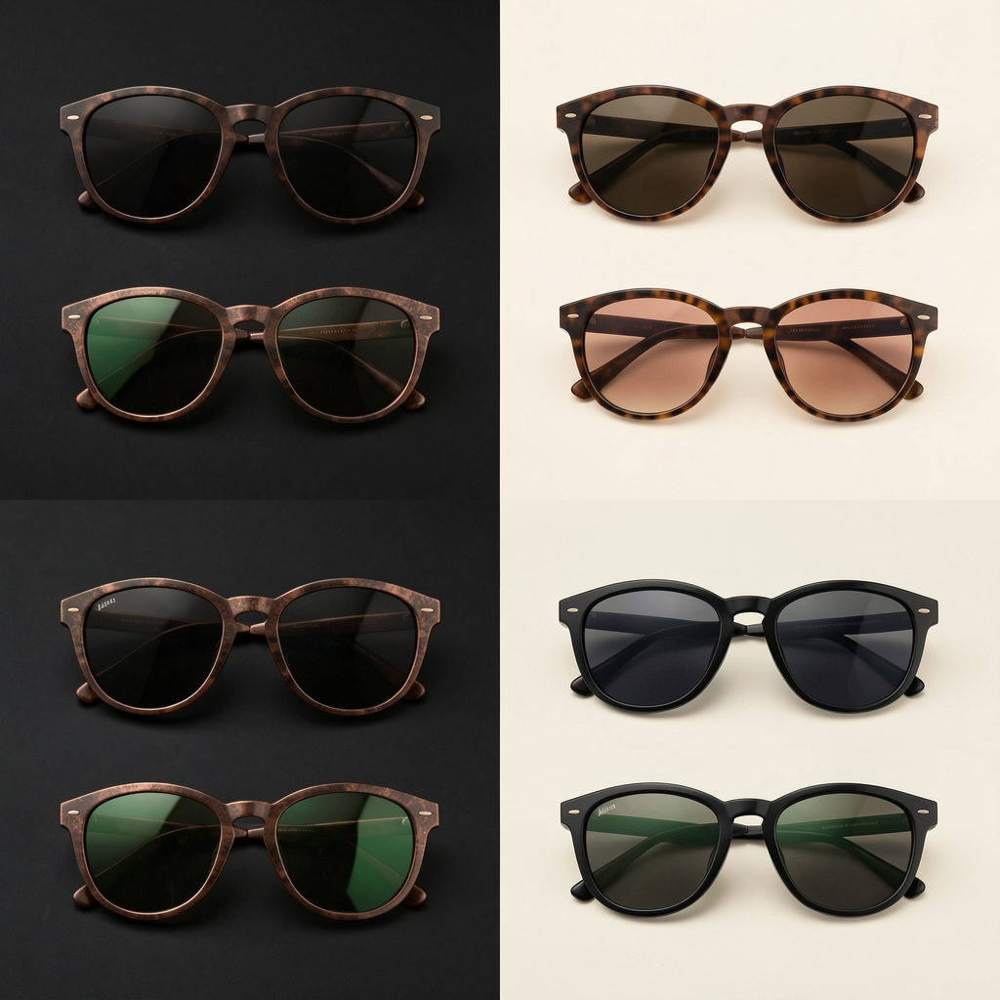
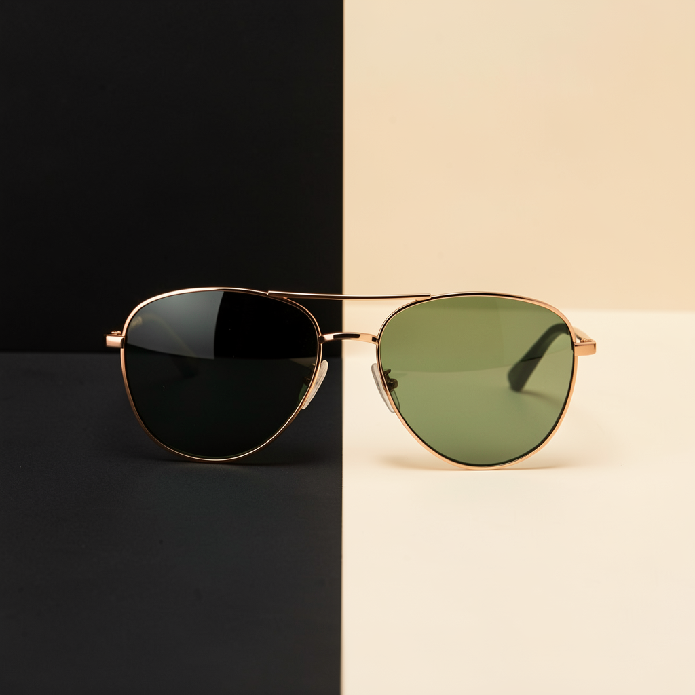

Post 01assets/legacy_optical_noir_post_01.png
ForgeGraph client handoff
Paquete armado desde el prompt operativo, con estrategia, contenido, assets, medición, QA y evidencia de linaje listos para aprobación. No se afirma publicación en vivo: el lanzamiento queda condicionado a aprobación y conectores reales.
Approval checkpoint
Artifact Index
Engagement, whiteboard, asset checksums, source deliverables, and media provenance are archived in manifest.json. The visible handoff keeps internal IDs out of client copy.
No Markdown files included.
Assets




Codex Strategy Brief
The Legacy Optical Noir weekend social launch should position Legacy as polished, stylish, and visually precise while giving the campaign a cinematic edge. The noir direction is not simply “dark visuals.” It is a strategic creative system built around contrast, focus, reflection, and atmosphere, all of which naturally connect to eyewear, lenses, clarity, and personal style.
Noir gives the weekend rollout a stronger point of view: high-contrast imagery, confident styling, refined shadows, city-night energy, and close-up product detail. This helps Legacy feel premium and memorable while still keeping the posts practical for a social launch.
The Optical Noir concept works because it connects three ideas:
Noir relies on light, shadow, reflection, and sharp focus. These visual cues map directly to optical care, eyewear, and the act of seeing clearly.
Weekend social content needs to feel scroll-stopping. Noir styling gives Legacy a fashion-forward tone without making the campaign feel generic or overly promotional.
The campaign should make Legacy unmistakable. Every post must include clear brand ownership through the Legacy logo, brand name, branded color use, or branded end-card treatment.
Launch a weekend social package that builds awareness, creates visual consistency, and gives Legacy a premium optical identity across social channels.
Primary goals:
The target audience responds to eyewear as both a practical need and a personal style choice. Weekend content should meet them in a browsing mindset: visual, quick to understand, polished, and easy to act on.
The strongest message is not “buy glasses this weekend.” It is:
Legacy helps you see clearly and show up with style.
This is a social rollout, not an operational logistics plan. The weekend structure defines the content sequence, message hierarchy, and channel cadence. It does not cover store staffing, fulfillment, inventory handling, appointment operations, or internal scheduling logistics.
Purpose: Introduce the noir world and build anticipation.
Recommended content:
Brand requirement:
Purpose: Deliver the main campaign moment.
Recommended content:
Brand requirement:
Purpose: Close the weekend with urgency and clarity.
Recommended content:
Brand requirement:
Every social asset must include at least one clear Legacy brand marker:
Preferred approach:
No asset should feel like a generic noir fashion post that could belong to another optical brand.
The campaign should use:
Avoid:
Before delivery, every image should pass a quality review.
QA checklist:
Focus on clarity, confidence, and entering the weekend with intention.
Connect eyewear to evening style, social plans, and personal presentation.
Use close-ups and product-focused copy to emphasize frames, fit, and finish.
Make the brand presence consistent so the campaign builds recognition, not just mood.
Legacy Optical Noir
Supporting copy options:
The final package is successful if it:
Message House
Legacy Optical Noir Message House Strategic rationale: Optical Noir is a premium contrast system for product photography, not a literal night-use claim for sunglasses. Why it works: black, ivory, copper, and controlled reflections make frames and lenses feel sharper, more editorial, and easier to remember in-feed. Positioning: lujo usable para CDMX; editorial, sobrio, accesible-premium. Brand presence: every social post should carry a Legacy logo or approved brand mark treatment unless the client explicitly requests clean product-only assets. Primary CTA: revisar estilos y aprobar piezas antes de publicar. Tone: Spanish-first, concrete, low-hype, confident.
Crm Scripts
WhatsApp / DM scripts Disponibilidad: Te confirmo modelo/color y te comparto alternativas si ya se movió. Precio: Son piezas premium; te ayudo a elegir el par que mejor se vea y más uses. Cierre: ¿Quieres que te aparte este modelo o prefieres ver dos opciones más?
Measurement Plan
Track the weekend social rollout and posting cadence: post saves, replies, profile visits, link clicks, DMs, holds, sold/blocked status, and next action every 24h. This is a posting and review cadence, not a shipping or fulfillment timeline unless the client provides logistics details. Hold live claims until connector evidence exists.
Channel Asset Map
Channel Asset Map
Qa Report
QA Report Media jobs succeeded: 6/6 Client package formats: HTML, PDF, PNG, JSON manifest, ZIP; no Markdown files. Policy: no live publishing claim; approval required before production launch. Decision: ready for review